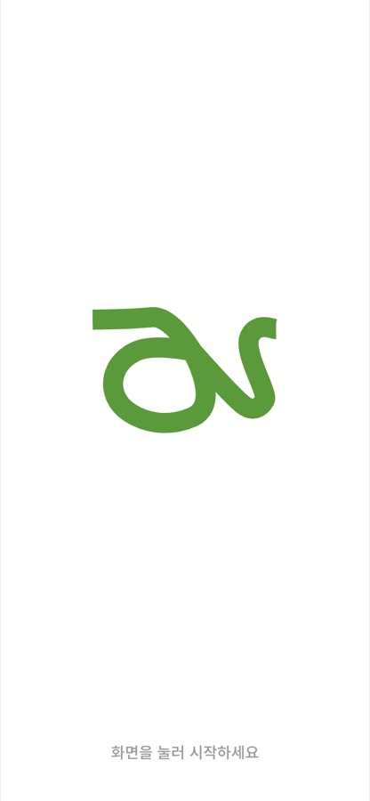

Art4Everyone
- Define
50–64세는 디지털에 약해서 박물관을 덜 찾는다고 여겨지지만, 설문 31명 모두 스마트폰을 능숙하게 썼습니다.
진짜 걸림돌은 서서 보는 피로와 작은 설명 글씨였고, 기존 박물관 앱은 관람 내내 화면을 보게 만듭니다. 자기 체력과 시간에 맞춰 덜 보고 잘 볼 방법이 없었습니다.
- Process
경로당 세 곳 방문, 설문 31명, 포커스 그룹 4회(15명), 국립중앙박물관 관찰로 관람이 끊기는 지점을 찾았습니다.
전시장에서 폰을 오래 보지 않도록 큰 글자와 한 화면 한 동작으로 흐름을 줄이고, 6명 원격 테스트로 다듬었습니다.
- Result
- 가진 관람시간을 넣으면 그만큼의 작품을 추천하고, AR로 다음 작품까지 안내하며, 지치기 전에 가까운 휴식 공간을 띄웁니다.
- Tool
- Claude Code, Adobe Illustrator
